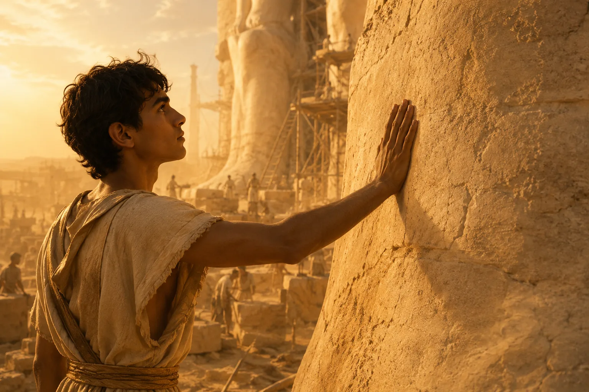
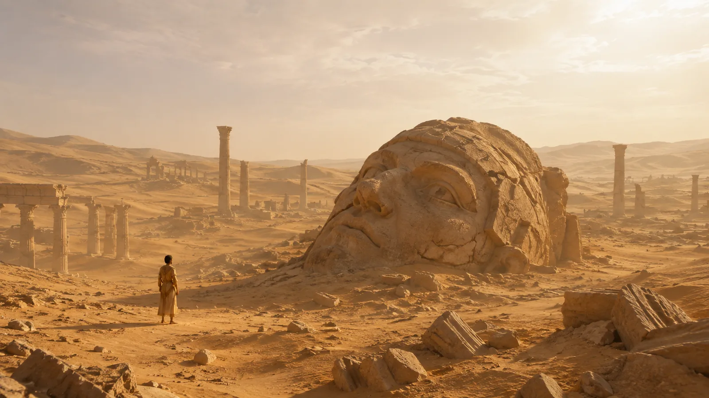
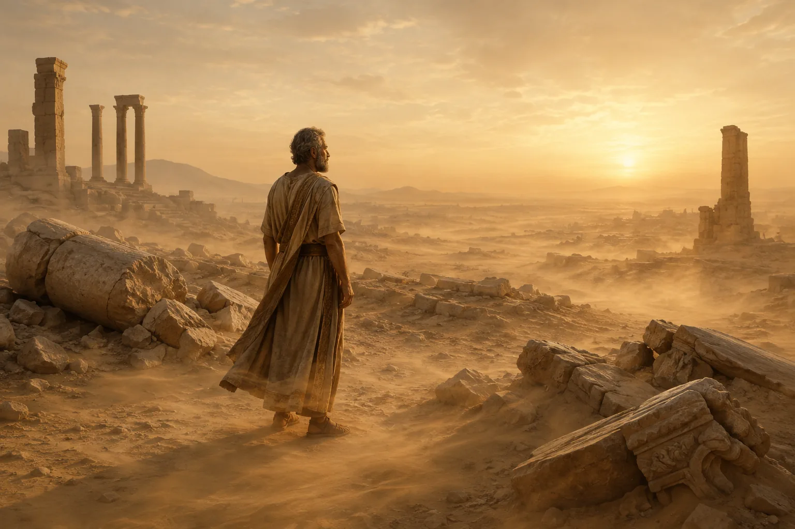
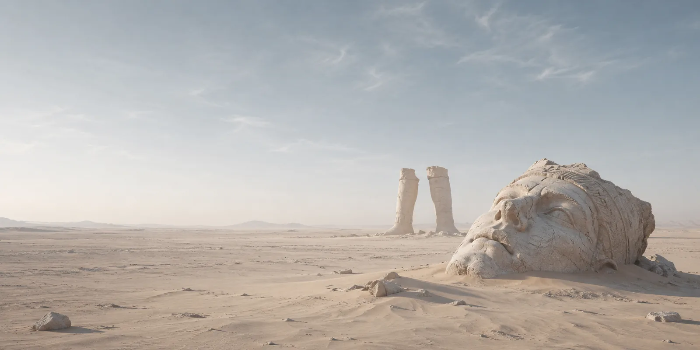

The Past
The boy who would be king wandered the ruins of a future he did not yet know, where the sky was a carpet of fire and dust, and the horizon swayed like the veils in his mother’s bedchamber. The sand was soft beneath his feet, warm as breath, hissing in languages too ancient for the Earth. The village, the city, the country, the world was a mirage, an echo, a half-formed prophecy. He did not yet know that time was a slow and patient thief.
He ran his hands over the limestone, where the chisel of some unnamed slave’s hand bit into the hard surface, somehow leaving his mark. The stone glinted gold beneath the rapidly reddening sun as the air cooled just slightly, and it felt like power, like permanence, like eternity. He did not yet know how the desert swallowed all things, how it turned kings to dust and gods to ghosts.
The wind, sharp with the scent of cumin and ash, sang to him in voices that were unique to his desert. An ode to empires not yet raised, of monuments not yet toppled. In the amber light, shadows seemed almost liquid, and for a moment, he saw the world as it would be — sand-drowned statues, shattered visages, the laughter of the golden sky above the ruins of the Mighty. He blinked, and the hot air shivered, dissolving like incense smoke.
The boy who would be king stood before the desert, before time, before the endless corridor of years that would build up his name then wear it down to nothing. He did not yet know that one day, the world would look upon his works and despair — not for their majesty, but for their absence. They would gaze upon his half-crumbled statue in some distant, alien land, a hole in his shoulder, his pride all torn away. That all he built would be a legend and a myth.
He did not yet know. And so he stood, eyes bright with the fire of all things still possible, heart alight with the reckless belief that gods do not die. He pressed his palm to the stone, whispering to it a promise that would be lost in the humid, ever-hungry wind.

The sand stirred again, and the limestone cooled ever so slightly, berated by the dull yet harsh, sand-ridden winds, that felt ashen yet tainted with streaks of gold.
The Present
The air was heavy and hung behind me like a wraith, as all summers are in this country. When I was a boy, I would wander through the landscape that seemed to ripple and blur, shifting under a sun that burned the sand underfoot. The horizon stretched endlessly, as if the entire world were a sea of sand, and I — small and insignificant — was swallowed by its vast indifference.
There were whispers in the wind, though whether they came from the gods or the ghosts of the desert, I could not tell. I stood behind the shadows of the dunes that loomed like camels’ humps, their crests forever arrested in motion. My feet sank into the hot, yielding earth, and I imagined the grains of sand were the disintegrated bones of forgotten kings, my ancestors, their empires crumbling to nothing but dust. I did not fear the sands — one day, they would come and go at my command, and be my messengers and heralds.
The ruins were my refuge. They rose out of the desert like the skeletons of eldritch beasts, their jagged edges softened by time and the sun. Columns crumbled, inscriptions faded, yet they still demanded my awe and reverence.
At night, I dreamt of gods with eyes like molten gold and voices of the most terrifying sandstorms. They strode across the heavens, indifferent to the lives of those below, their every footstep shaping the earth and shattering it cruelly. I saw my own face in those shadows, grotesque and distorted, both mighty and haunting. They whispered promises to me in languages I did not understand, and I woke with the taste of salt and ash on my tongue.
The patterns of the desert were never identical, its fine golden ash always forming and reforming, driven by the wind and time itself. The dunes of midday will be gone by nightfall, and nothing ever looks the same. What rises will fall, what is carved will be worn smooth. The statues that loomed above me, weathered and broken, seemed to know this truth. Their faces had crumbled, their arms reaching out yet severed and broken. And yet, they remained, defying the sands, daring the wind to erase them.
Once, in the golden half-light of dawn, I saw a great head, half-buried, its features contorted in a grimace of pride and despair. I thought it must belong to a god, cast down and humbled. I knelt before it, not out of worship but curiosity. I wanted to ask it: Did you believe the world could hold you forever?
But the desert does not answer. It never does.

Years passed, and I grew. The wind carried whispers that spoke of destiny and power, and I listened with the desperation of a lost wanderer longing for direction. My name began to echo across the sands. I would be a builder, a ruler, a name carved into the ashen yet golden Earth itself.
Now I stand among what remains of my empire, and I cannot tell whether it is memory or reverie. The statues lie fragmented, their inscriptions eroded to whispers. The wind howls through the empty deserts, laughing at the folly of permanence. The desert stretches on, infinite beyond the horizon — my horizon. It is not cruel; it simply is. I understand that I was never its master. I was always its child. We will always be.

The Future

I met a traveller from an antique land
Who said: “Two vast and trunkless legs of stone
Stand in the desert… Near them, on the sand,
Half sunk, a shattered visage lies, whose frown,
And wrinkled lip, and sneer of cold command,
Tell that its sculptor well those passions read
Which yet survive, stamped on these lifeless things,
The hand that mocked them, and the heart that fed:
And on the pedestal these words appear:
‘My name is Ozymandias, king of kings:
Look on my works, ye Mighty, and despair!’
Nothing beside remains. Round the decay
Of that colossal wreck, boundless and bare
The lone and level sands stretch far away.”
Percy Bysshe Shelley, Ozymandias, 1818